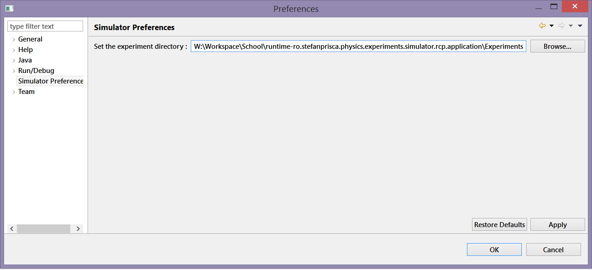

Experiments are stored in json files. This file type has been chosen due to its simple logic and the ease with which it can be serialized and deserialized.
All experiment files are taken from a user defined folder.
In order to set this folder, go to File -> Preferences -> Simulator Pref
and set the Directory path to the desired folder.
